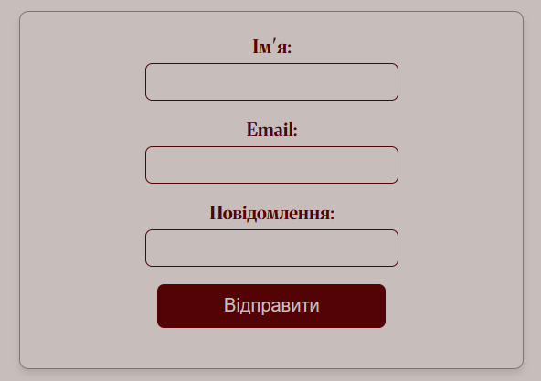

Інтерактивна платформа для гостей бару
Цей сайт — сучасна інтерактивна платформа, яка надає клієнтам можливість ознайомитися з послугами закладу, здійснювати бронювання, переглядати події та користуватися додатковими функціями.
Основні можливості:
- Перегляд меню – ознайомлення з асортиментом напоїв і закусок, складом, об’ємом та вартістю.
- Онлайн-бронювання – вибір дати, часу та місця у барі. Адміністратор може уточнити деталі.
- Створення та управління профілем – збереження особистої інформації та перегляд історії відвідувань.
- Перенесення та скасування бронювання – можливість змінювати або скасовувати бронь.
- Онлайн-оплата – безпечні способи оплати, включаючи депозит і чайові.
- Афіша подій – перегляд розкладу майбутніх заходів, концертів і спецпропозицій.
Ця платформа робить взаємодію гостей із закладом комфортнішою, автоматизує процеси та покращує обслуговування.
Тема:
СТРУКТУРА HTML-ДОКУМЕНТА. ВИБІР ПРЕДМЕТНОЇ ГАЛУЗІ. GitHub. РОБОТА З РЕПОЗИТОРІЯМИ. ОСНОВНІ ТЕГИ ТА АТРИБУТИ в HTML-ДОКУМЕНТІ.
Мета:
Придбати практичні навички роботи з GitHub, репозиторіями, HTML-документом, таблицями, зображеннями, посиланнями, списками, формами Створити шаблон звітного HTML-документа для відображення результатів роботи всіх лабораторних робіт.
Посилання:
Репозиторій WEB-застосунку Жива сторінка WEB-застосунку Репозиторій звіту Жива сторінка звіту Репозиторій з самостійними роботами Жива сторінка з самостійнимиСтруктура головної сторінки WEB-застосунку
Таблиця
HTML-код таблиці:
<table border="1">
<tr>
<th>Освіта</th>
<th>Хобі</th>
<th>Навички</th>
</tr>
<tr>
<td>Багатопрофільний ліцей №62 (м.Запоріжжя)</td>
<td>Йога</td>
<td>3d-моделювання</td>
</tr>
<tr>
<td>Міський палац дитячої та юнацької творчості (м.Запоріжжя)</td>
<td>Танці
<ul>
<li>Східні</li>
<li>Контемп</li>
<li>Джаз</li>
</ul>
</td>
<td>Аналіз даних</td>
</tr>
<tr>
<td>Національний технічний університет України «Київський політехнічний інститут імені Ігоря Сікорського»</td>
<td>Бартендерінг</td>
<td>Програмування:
<ul>
<li>HTML</li>
<li>CSS</li>
<li>JavaScript</li>
</ul>
</td>
</tr>
</table>
Cкріншот таблиці:
Теорія про таблиці:
<table>— тег для створення таблиці.<tr>— тег для визначення рядка таблиці.<th>— тег для визначення заголовка стовпця таблиці.<td>— тег для визначення клітинки таблиці.- Атрибут
border="1"додає рамку навколо таблиці та її клітинок.
Зображеня
HTML-код зображення:
<img src="me.jpg" alt="Оленка" class="img">
Скріншот зображення:
Теорія про зображення:
<img>— тег для вставки зображень.- Атрибут
srcвказує шлях до зображення. - Атрибут
alt— альтернативний текст для зображення (показується, якщо зображення не завантажилось або для користувачів з обмеженими можливостями). - Атрибут
class="img"дозволяє стилізувати зображення через CSS.
Списки
HTML-код списків:
<ul>
<li>Східні танці</li>
<li>Контемп</li>
<li>Джаз</li>
</ul>
<ul>
<li>HTML</li>
<li>CSS</li>
<li>JavaScript</li>
</ul>
Скріншоти списків:
Теорія про списки:
<ul>— тег для створення ненумерованого списку.<li>— тег для кожного елементу списку.- Використовуємо
<ul>, коли не важливо, в якому порядку елементи, і хочемо створити маркований список.
Посилання
HTML-код посилань:
<a href="bar%20page/bar.html">Хочеш глянути інформацію про мій бар?</a>
Скріншот посилання:
Теорія про посилання:
<a>— тег для створення гіперпосилань.- Атрибут
hrefвказує адресу сторінки, на яку веде посилання. - В тексті між тегами вказуємо назву або опис посилання.
Форма
HTML-код форми:
<form action="/submit-form" method="POST">
<label for="name">Ім'я:</label>
<input type="text" id="name" name="name" required>
<br>
<label for="email">Email:</label>
<input type="email" id="email" name="email" required>
<br>
<label for="message">Повідомлення:</label>
<input id="message" name="message" required>
<br>
<button type="submit">Відправити</button>
</form>
Скріншот форми:
Теорію про форми:
- <form> — Тег для створення форми. Визначає область, у межах якої користувач може вводити дані.
- <input> — Тег для створення елементів введення (текстові поля, кнопки, прапорці тощо).
- <label> — Тег для прив'язки текстового опису до елемента форми (наприклад, до текстового поля).
- <button> — Тег для створення кнопки, яку користувач може натискати.
- <select> та <option> — Теги для створення випадаючих списків.
Висновки
У результаті виконання цього проєкту я здобула практичні навички роботи з HTML, створивши таблиці, списки, посилання та форми для збору даних. Також освоїла GitHub для управління кодом і співпраці з іншими розробниками, створивши репозиторій для зберігання проєкту. Створення бізнес-логіки та моделі сайту в Figma допомогло зрозуміти структуру інтерфейсу, що стало важливим кроком у розвитку навичок веб-розробки та підготовці до роботи на реальних проєктах.